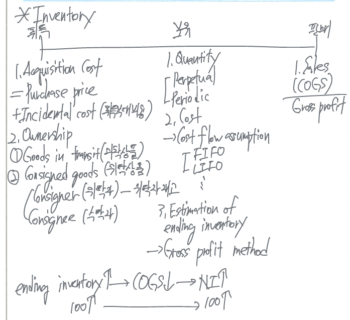

Inventories
created: December 29, 2022 7:45 AM last updated: January 3, 2023 2:38 PM 📨 Project: https://www.notion.so/Accounting-Principle-c73580d5e8f947a0bc5a546b601e7239

Inventories
기업의 정상적인 영업활동을 수행하는 과정에서 판매 목적으로 보유하고 있는 자산
They are in ready for sale to customers in the ordinary course of business.
Inventories 종류
Merchandiser’s inventories - Merchandises (상품)
Manufacturer’s inventories - Finished goods (제품), work in process (재공품), raw material (원재료)
Inventory 회계처리의 특징 - 수량결정, 단가결정
수량결정 - taking a physical inventory & determining ownership of goods
- perpetual inventory system & periodic inventory system
단가결정 - using cost flow assumptions
Acquisition costs
The acquisition cost of inventories includes all other costs incurred to getting the inventories ready for sale.
\[ \text{Acquisition cost} = \text{direct purchase price} + \text{freight in} + \text{sales tax} + \text{packing costs} + \text{insurance cost in transit} - \text{purchase returns} \]
Determining ownership of goods
Goods in transit (미착상품)
Legal title is determined by the terms of the sale.
- FOB (free on board) shipping point - 재화가 선적되었을 때 소유권이 buyer에게 이전되며
운반중인 상태에서는 buyer의 재고자산에 포함된다. - FOB destination - 재화가 buyer에게 도달할 때까지 소유권은 여전히 seller에게 있으므로
운반중인 상태의 재고자산은 seller의 재고자산에 포함한다.
consigned goods (적송품)
Goods held for sale by consignee (agent) although ownership of the goods is retained by consigner (true owner). The consignor should include the consigned goods in its inventory.
적송품은 수탁자가 최종소비자에게 판매하기 전까지는 수탁자가 보관하여도 위탁자의 소유이며 수탁자가 최종소비자에게 판매하였을 때 위탁자가 수익을 인식한다.


기말 재고자산의 증가 → 매출원가의 감소 → 당기순이익의 증가
기말재고자산이 증가(감소)한 금액만큼 최종적으로 당기순이익이 동일한 금액만큼 증가(감소)하므로 재고자산의 증감은 당기손익의 결정에 중요한 요소이다.
Cost flow assumption
실제물량 흐름과 관계없이
- 구입시점마다 inventory의 unit cost가 다르다
- 단위 당 sales price는 동일
- 실제 판매와 무관
재고자산의 구입시점마다 unit cost가 서로 다른 재고 매입의 경우에는 어느 시점에 구입한 재고가 판매되었는지를 결정해야 판매된 매출원가와 남아있는 기말재고 및 당기순이익이 결정되므로 재고자산의 단가 결정은 손익결정에 중요한 요소이다.
specific identification method (개별법)
개별법은 재고자산에 가격표 (price tag)를 붙여서 관리하며 서로 다른 매입시점에 서로 다른 매입원가를 개별적으로 구분 및 파악하여 실제 판매된 것과 기말에 남아 있는 것으로 재고자산금액을 결정하는 방법으로 이론적으로 가장 이상적인 방법이다.
The cost flow exactly matches the physical flow of the goods.
Ideal method - actual cost matches against actual revenue.
상호 교환 가능한 재고자산은 개별법을 적용하면 이익조작가능성이 있다.
- allows company to manipulate net income.
first in-first out (FIFO) method (선입선출법)
선입선출법이란 실제 물량흐름과 관계없이 먼저 구입한 자산이 먼저 판매되었다고 가정하는 방법으로 실제 당기에 판매한 매출액에 대응되는 매출원가에는 과거에 구입한 재고 자산이 포함되고 기말 재고자산에는 최근에 구입한 재고자산이 포함된다.
The first goods purchased are the first sold. (no-matching)
Ending inventory includes the most recent purchase.
- 최근 구입재고가 기말재고
Ending inventory and cost of goods sold are the same whether a periodic or perpetual inventory system is used.
In a period of rising prices:
High inventory→ low COGS →high net income→ high tax, dividend
last in-first out (LIFO) method (후입선출법) → not IFRS
후입선출법이란 실제 물량흐름과 관계없이 나중에 구입한 재고가 먼저 판매되었다고 가정하는 방법으로 매출원가에는 최근에 구입한 재고자산이 포함되고 기말재고자산에는 과거에 구입한 자산이 포함되어 있게 된다.
The cost matches the last goods purchased against revenue (matching principle)
Ending inventory includes the oldest costs.
Ending inventory and COGS are different from a periodic with a perpetual inventory system.
In a periods of rising price:
low inventory→ high COGS →low net income→ low tax, dividend
But, better matches expense against revenue because it matches current costs with current revenue.
- 실제 물량흐름을 제대로 반영하지 못하므로 LIFO method is prohibited under IFRS.
average costing method (평균법)
계속기록법 (perpetual system)을 적용한 평균법을 moving average method (이동평균법)이라고 하고 실지재고조사법 (periodic system)을 적용한 평균법을 weighted average method (총평균법)이라 한다. 이동평균법은 판매직전까지 최근 구입한 재고의 평균단가로 산정하여 비교적 최근 구입한 재고의 금액이 기말재고 산정에 고려되며 총평균법은 전체 회계기간 동안 구입한 재고의 평균단가로 기말재고자산이 산정되어 있기 때문에 이동평균법과 일반적으로 기말재고금액이 서로 다르다.
weighted average method = average method + periodic system
moving average method = average method + perpetual system
당기순이익 및 현금흐름 크기 비교
| 기말재고자산, 당기순이익, 법인세납부액 큰 순서 | FIFO > MAM > WAM > LIFO |
|---|---|
| 매출원가, 순현금흐름 큰 순서 | FIFO < MAM < WAM < LIFO |


Lower of cost or market (LCM: 저가법)
only unrealized holding loss is recognized.
only for inventory
cost method → PPE, intangible
- unrealized holding gain/loss are not recognized.
fair value method → securities
- unrealized holding gain/loss are recognized.
저가법이란 기말 재고자산을 자산으로 측정할 때 원가와 시가 중에서 더 낮은 금액으로 측정하여 표시하는 원칙이다. US GAAP은 자산을 원칙적으로 cost로 평가하지만 재고자산이 진부화 (obsolescence), 파손, 부패 등의 사유로 더 이상 원가가 유지되지 않고 하락하면 LCM으로 평가해야 한다.
LCM은 A departure from the cost basis of accounting.
The lower of cost or market (LCM) → conservatism (보수주의) 사례
- 선택가능한 모든 option 중에 가장 재무적 기초가 튼튼한 option을 택할 것
- 기말재고자산의 장부금액 = Min(cost, market)
- LCM을 적용하면 ocst보다 market 금액이 상승해도 더 낮은 cost로 측정해야 하므로 unrealized holding gains(평가이익)은 발생할 수 없으며 cost보다 market 금액이 하락하면 market으로 측정해야 하므로 unrealized holding losses (평가손실)은 발생한다.
- cost = FIFO, LIFO, Average method or 취득원가 etc.
market value의 의미
- FIFO, average method = market 금액은 NRV만 적용
- LIFO, retail inventory method = Median[replacement cost, NRV, NRV - normal profit margin]
\[ \text{inventory net realizable value (순실현가능가치)} = \text{selling price} - \text{the cost to complete and dispose of the inventory} \]
- Market 금액은 위 3가지 금액 중에서 중간값
- cost of dispose of the inventory = Work in process의 전환비용
Conservatism - When in doubt, choose that will be least likely to overstate assets and income.
- 보주수의는 회계원칙이 아니라 회계상의 관행으로 불확실한 상황에서 선택 가능한 가장 여러가지 회계처리 방법이 존재하는 경우 가능한 이익 (기말재고자산)이 가장 낮게 보고하는 방법을 선택하여 재무제표에 표시하는 회계상의 관행
Replacement cost (현행대체원가) - 재고자산 측정일에 파악된 the cost to purchase the item of inventory
US GAAP에서는 NRV를 market ceiling이라고 하며, NRV - normal profit markgin을 market floor라고 한다.

Assets measurement method (자산평가방법)
Historical cost (역사적 원가주의) - 자산은 취득시점의 취득원가 (지급한 대가의 공정가치)로 기록한다
- PPE
lower of cost method (저가법) - 기말자산의 평가는 원가와 시가 중에서 낮은 금액으로 평가한다
- inventory
fair value method (공정가치법) - 자산은 기말의 공정가치로 평가하여 평가손익을 인식한다. 공정가치로 평가한다는 것은 평가이익과 평가손실이 발생하는 경우 모두 인정하는 방법이다.
- securities
측정기준
- replacement cost (현행대체원가) - ex) some inventory
- net realizable value (NRV, 순실현가치) - selling price - selling expense
- ex) A/R
- present value (현재가치) - long term receivable/payable
Inventory errors
Inventory errors affect both the income statement and the balance sheet.
Income statement effects
Inventory errors affects the computation of COGS and NI in two periods.
Over the two years, total NI is correct because the errors offset each other.
- counter balancing error
20x1 ending inventory = 20x2 beginning inventory

| inventory error | COGS | NI | equity |
|---|---|---|---|
| understate (overstate) BI | understate (overstate) | overstate (understate) | overstate |
| understate (overstate) EI | overstate (understate) | understate (overstate) | understate |

Statement present and analysis
Disclosure 사항
- major inventory classifications (merchandise, FG, WIP, RM etc)
- the basis of accounting (평가방법 - Cost, LCM)
- the costing method (FIFO, LIFO, or average)
Analysis: activity ratios
Inventory turnover ratio (재고자산회전율)
- how many times a company turn over (sells) its inventory during a period and how quickly inventory is sold is an indicator of enterprise performance.
\[ \text{Inventory turnover ratio} = \frac{\text{cost of goods sold}}{\text{average inventory}} \]
\[ \text{A/R turnover} = \frac{\text{sales revenue}}{\text{Average A/R}}, \text{A/P turnover} = \frac{\text{sales revenue}}{\text{Average A/P}} \]
Days in inventory (inventory turnover in days, 재고자산회전기간)
- 재고자산을 구입/제조하여 판매할 때까지 소요되는 기간
- the number of days one can sell from inventory if no new items are purchased. The average number of days required to sell inventory and inventory is held.
\[ \text{Days in inventory} = \frac{\text{365 days}}{\text{inventory turnover ratio}} \]
\[ \text{Operating cycle} = \text{A/R turnover in days} + \text{Inventory turnover in days} \]